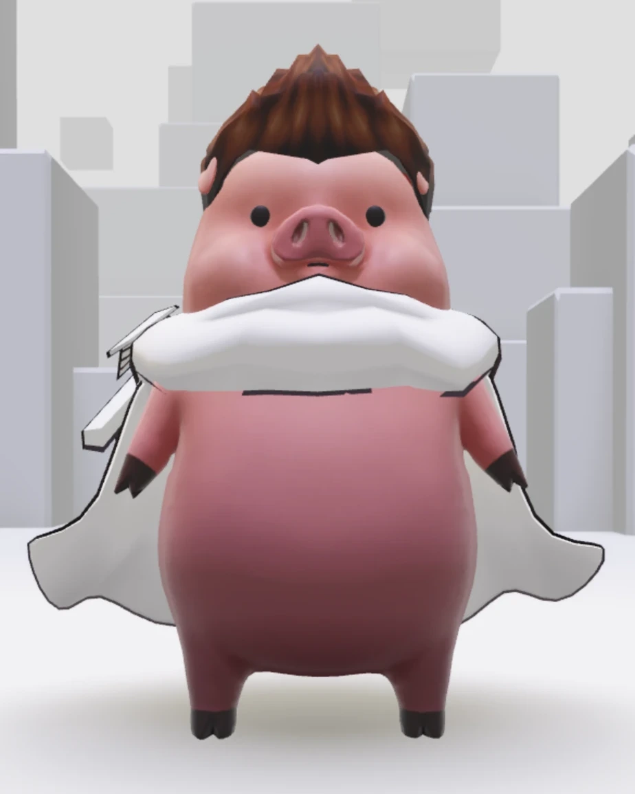
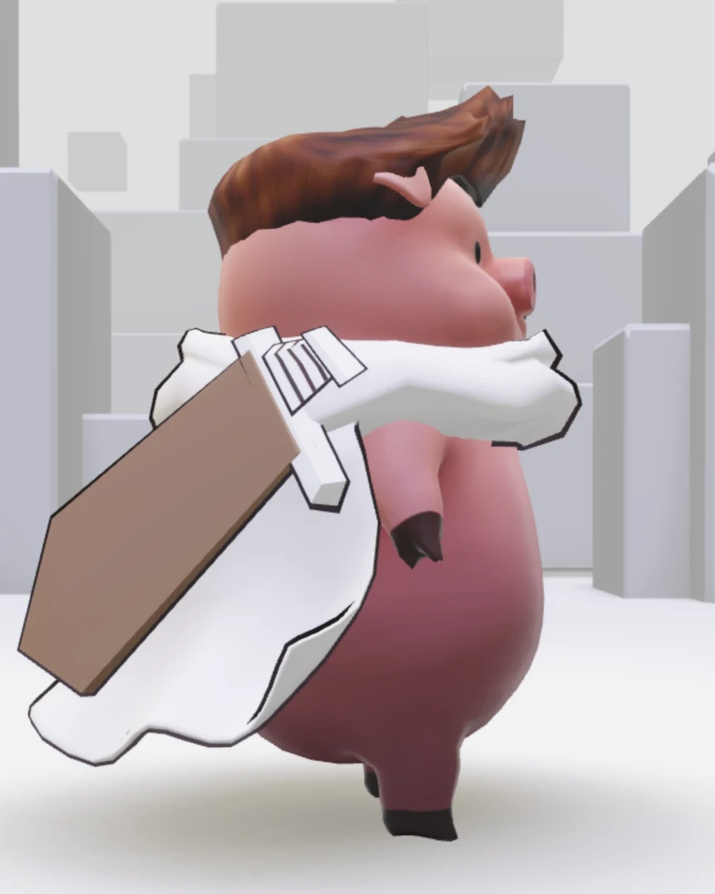
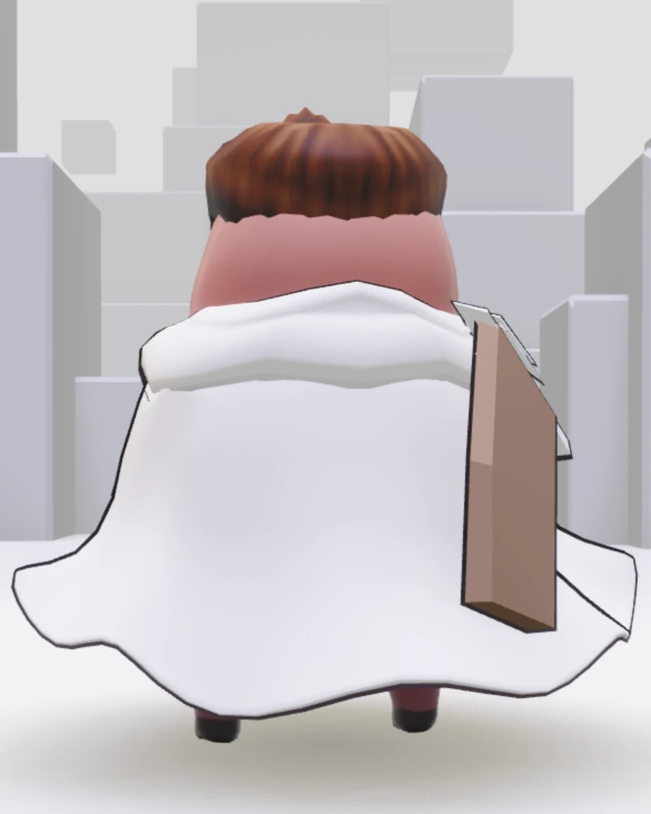
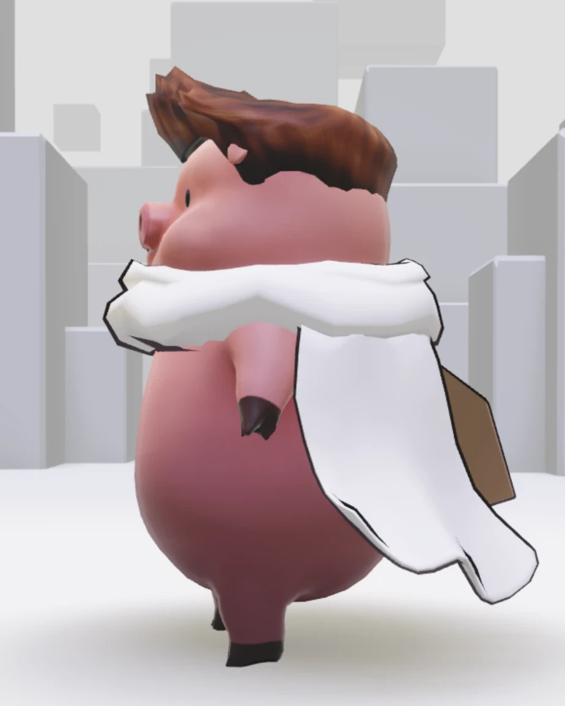

STORY
워들스는 돼지예요. 아침마다 갈색 머리를 세우는 데 40분, 하얀 망토를 두르는 데 5분, 나무칼을 메는 데 1분이 걸려요. 아침밥은 2시간 먹어요.
칼을 뽑아 본 적은 한 번도 없어요. 손이 안 닿거든요. 그래도 워들스는 오늘도 망토를 펄럭이며 동네를 한 바퀴 돌아요. 담당의한테 다이어트 권고를 받았거든요.




워들스는 돼지예요. 아침마다 갈색 머리를 세우는 데 40분, 하얀 망토를 두르는 데 5분, 나무칼을 메는 데 1분이 걸려요. 아침밥은 2시간 먹어요.
칼을 뽑아 본 적은 한 번도 없어요. 손이 안 닿거든요. 그래도 워들스는 오늘도 망토를 펄럭이며 동네를 한 바퀴 돌아요. 담당의한테 다이어트 권고를 받았거든요.